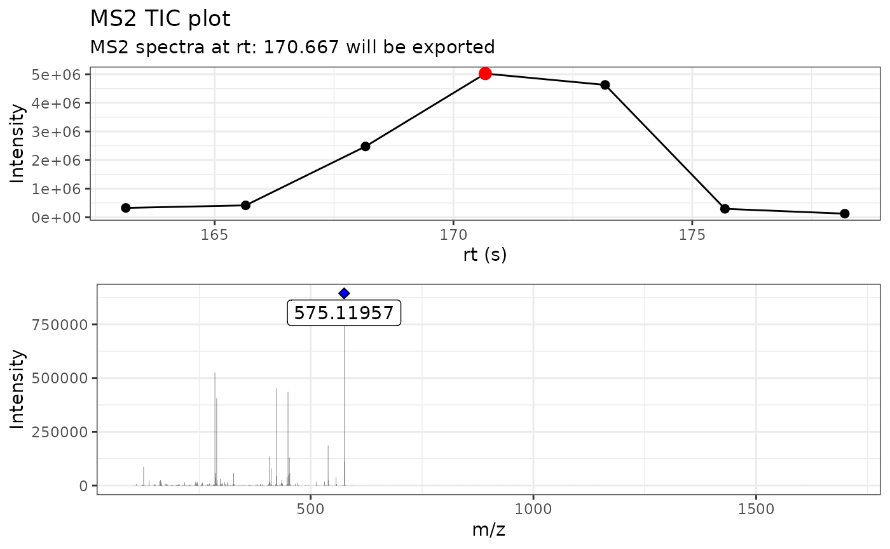
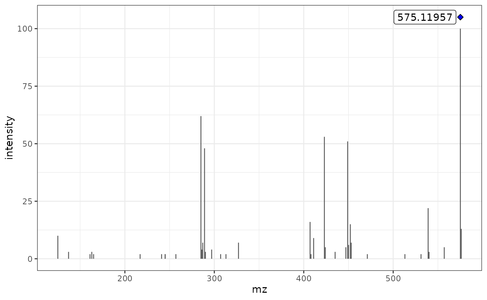

Introduction to MS2extract package
Cristian Quiroz-Moreno
2023-02-17
introduction.RmdIntroduction
This vignette has the objective to introduce the MS2extract package. The main goal of this package is to provide a tool to create in-house MS2 compound libraries. Users can access a specific function help through the command help([‘function name’]). It is worth to note that this package is aimed in the targeted extraction of MS/MS scans and it is not able to perform compound matching/annotation.
A simplified workflow is presented in Figure 1. Briefly, mzXML files are imported in memory, then based on metadata provided by the user such as compound chemical formula, the m/z is calculated extract the MS/MS scans matching with the theoretical m/z. Then, low intensity signals, or background noise, is removed out of the spectra. Finally, user can export the extracted MS/MS spectra to a msp file format to be used as reference library for further compound identification and annotation.
Figure 1. Overview of general data processing pipeline to extract MS/MS exptra using the MS2extract package
Basic workflow
As previously mentioned, the workflow consist in four main steps:
- data import,
- extract MS/MS scans,
- detect mass, and
- exporting MS/MS libraries
In this section, we will explain in a more detail the main steps as well as provide information about the required and optional arguments that user may need to provide in order to properly use this package.
Additionally, this package also includes a set of
batch_*() functions that allows to process multiple mzxml
files at once. However, more metadata is required to run this automated
pipeline and the use of this batch_*() functions will be
described later in this document.
Data import
This section is focused on describing how MS2extract package imports MS/MS data.
The main import fuction relies on the newly implemented metID R package. We adapted the import function in order to read mass spectrometry data from mzXML files. The new adaptation consists in importing scans data in a list (S3 object) rather than into a S4 object, facilitating the downstream tidy analysis of this objects.
This function execute a back-end calculation of theoretical ionized mass of the compound in order to extract the precursor ions that match that mass with a given ppm.
The arguments of the import_mzxml() functions are
four:
- file
- met_metadata
- ppm
- …
# Loading the package
library(MS2extract)
# Print function arg
formals(import_mzxml)
#> $file
#> NULL
#>
#> $met_metadata
#> NULL
#>
#> $ppm
#> [1] 10
#>
#> $...File
File consist in the file name of your mzXML file that contains MS/MS data of your authentic standards or reference material. Here, we provide an example file of Procyanidin A2 collected in Negative ionization mode with a collision energy of 20 eV.
# Importing the Spectrum of Procyanidin A2 in negative ionization mode
# and 20 eV as the collision energy
ProcA2_file <- system.file("extdata",
"ProcyanidinA2_neg_20eV.mzXML",
package = "MS2extract")
# File name
ProcA2_file
#> [1] "/home/runner/work/_temp/Library/MS2extract/extdata/ProcyanidinA2_neg_20eV.mzXML"met_metadata
This argument refers to the metadata that user need to provide in order to properly import scans that are related to the compound of interest.
The met_metadata is a data frame that has required and
optional columns. The required columns are employed to calculate the
theoretical ionized m/z of a given formula and ionization mode. In the
optional columns, we have the option to provide the Region Of Interest
where the compound elutes in order to only keep this retention time
window.
The required columns are:
- Formula: A character specifying the metabolite formula
- Ionization_mode: The ionization mode employed in data collection. It can be either Positive or Negative
The optional columns are:
- min_rt: a double with the minimum retention time to keep
- max_rt: a double with the minimum retention time to keep
# Procyanidin A2 metadata
ProcA2_data <- data.frame(Formula = "C30H24O12",Ionization_mode = "Negative",
min_rt = 163, max_rt = 180)
ProcA2_data
#> Formula Ionization_mode min_rt max_rt
#> 1 C30H24O12 Negative 163 180import_mzxml()
With all arguments explained, we can use the
import_mzxml() function.
# Import Procyanidin A2 data
ProcA2_raw <- import_mzxml(ProcA2_file, met_metadata = ProcA2_data, ppm = 5)
#> Reading MS2 data from ProcyanidinA2_neg_20eV.mzXML
#> Processing...
# 24249 rows = ions detected
dim(ProcA2_raw)
#> [1] 24249 4Extracting MS2 spectra
Now that we have the data imported, we con proceed to extract the most intense MS/MS scan between all scans.
This function computes the MS/MS TIC by summing up all intensities of the MS/MS scans and select the scans with the highest intensities.
This function takes three arguments
- spec: the imported MS/MS spectra
- verbose: a boolean, if verbose = TRUE, the MS/MS TIC and spectra is printed, if verbose = FALSE, plots are not displayed
- out_list: a boolean, if out_list = TRUE, the extracted MS/MS spectra table and plots are returned as list, otherwise only the MS/MS spectra is returned as data frame.
ProcA2_extracted <- extract_MS2(ProcA2_raw, verbose = TRUE, out_list = FALSE)
#> Warning: `position_stack()` requires non-overlapping x intervals
Here, we can see in the top plot MS/MS tic that the scan colored in red is the most intense and the MS/MS spectra of that scan will be exported. At the bottom plot, we can see the Procyanidin A2 MS/MS spectra at rt: 170.667. The maximum m/z axis value is > 1500 m/z but not significant ions are displayed. This can be explained due to low intensities are kept in the MS/MS spectra.
range(ProcA2_extracted$mz)
#> [1] 100.0852 1699.0981The range of the MS/MZ m/z value is from 100 m/z to 1699 m/z, but intensities are too slow to be seen in the plot.
Detecting mass
Similarly to the MZmine pipeline, detecting masses refers to set a minimum signal intensity threshold that ions has to meet in order to be kept. Thus, ion with lower intensities are removed from the data frame. This function can also normalize the spectra ion intensity to percentage based on the base peak.
The three required arguments are:
- spec: a data frame containing the MS2 spectra.
- normalize: a boolean indicating if the MS2 spectra is normalized by he base peak before proceeding to filter out low intensity signal (normalize = TRUE), if normalize = FALSE the user has to provide the minimum ion count.
- min_int an integer refereing to the minimum ion intensity
By default, the normalization is set to TRUE and the
minimum intensity is set to 1% to remove background noise.
ProcA2_detected <- detect_mass(ProcA2_extracted, normalize = TRUE, min_int = 1)We can see now the range of m/z values and the maximium value is 576.1221 m/z.
range(ProcA2_detected$mz)
#> [1] 125.0243 576.1221MS/MS spectra plot
We can proceed to plot the clean MS/MS spectra with
plot_MS2spectra() function. This is a ggplot2 based
function; the blue diamond refers to the precursor ion.
If we take a look to the previous MS/MS plot, there is less background noise in this MS/MS spectra.
plot_MS2spectra(ProcA2_detected)
#> Warning: `position_stack()` requires non-overlapping x intervals
Exporting MS/MS spectra
Finally after extracting the MS/MS spectra and removing background noise, we can proceed to export the MS2 in a msp format.
For this task, we need extra information about the compound, such as SMILES, COLLISIONENERGY, etc.
An example of this table can be found at:
# Reading the metadata
metadata_file <- system.file("extdata",
"msp_metadata.csv",
package = "MS2extract")
metadata <- read.csv(metadata_file)
dplyr::glimpse(metadata)
#> Rows: 1
#> Columns: 8
#> $ NAME <chr> "Procyanidin A2"
#> $ PRECURSORTYPE <chr> "[M-H]-"
#> $ FORMULA <chr> "C30H24O12"
#> $ INCHIKEY <chr> "NSEWTSAADLNHNH-LSBOWGMISA-N"
#> $ SMILES <chr> "C1C(C(OC2=C1C(=CC3=C2C4C(C(O3)(OC5=CC(=CC(=C45)O)O)C6…
#> $ IONMODE <chr> "Negative"
#> $ INSTRUMENTTYPE <chr> "Q-TOF 6545"
#> $ COLLISIONENERGY <chr> "20 eV"The precursor ion is not necessary to provide since this information is included in the extracted MS/MS spectra.
The three arguments for this function are:
- spec: a data frame containing the extracted MS2 spectra
- spec_metadata: a data frame containing the values to be including in the resulting msp file
- msp_name: a string with the name of the msp file not containing (.msp) extension
write_msp(spec = ProcA2_detected,
spec_metadata = metadata,
msp_name = "Procyanidin_A2")After writing the msp file, you will see the following file content:
#> NAME: Procyanidin A2
#> PRECURSORMZ: 575.119567871094
#> PRECURSORTYPE: [M-H]-
#> FORMULA: C30H24O12
#> RETENTIONTIME: 170.667
#> IONMODE: Negative
#> COMMENT: Spectra extracted with MS2extract R package
#> INCHIKEY: NSEWTSAADLNHNH-LSBOWGMISA-N
#> SMILES: C1C(C(OC2=C1C(=CC3=C2C4C(C(O3)(OC5=CC(=CC(=C45)O)O)C6=CC(=C(C=C6)O)O)O)O)C7=CC(=C(C=C7)O)O)O
#> CCS:
#> COLLISIONENERGY: 20 eV
#> INSTRUMENTTYPE: Q-TOF 6545
#> Num Peaks: 38
#> 125.02431 10
#> 137.02441 3
#> 161.02449 2
#> 163.00355 3
#> 165.01881 2
#> 217.04996 2
#> 241.05002 2
#> 245.04547 2
#> 245.0817 2
#> 257.0451 2
#> 285.04063 62
#> 286.04387 4
#> 287.05579 7
#> 289.0718 48
#> 290.07495 3
#> 297.03993 4
#> 307.06114 2
#> 313.03573 2
#> 327.05044 7
#> 407.07693 16
#> 408.08161 2
#> 411.07227 9
#> 423.07231 53
#> 424.07537 5
#> 435.07138 3
#> 447.07296 5
#> 449.08799 51
#> 450.09044 6
#> 452.07453 15
#> 453.08155 7
#> 471.1086 2
#> 513.11796 2
#> 531.13006 2
#> 539.09834 22
#> 540.10156 3
#> 557.10809 5
#> 575.11968 100
#> 576.12208 13Session info
sessionInfo()
#> R version 4.2.2 (2022-10-31)
#> Platform: x86_64-pc-linux-gnu (64-bit)
#> Running under: Ubuntu 22.04.1 LTS
#>
#> Matrix products: default
#> BLAS: /usr/lib/x86_64-linux-gnu/openblas-pthread/libblas.so.3
#> LAPACK: /usr/lib/x86_64-linux-gnu/openblas-pthread/libopenblasp-r0.3.20.so
#>
#> locale:
#> [1] LC_CTYPE=C.UTF-8 LC_NUMERIC=C LC_TIME=C.UTF-8
#> [4] LC_COLLATE=C.UTF-8 LC_MONETARY=C.UTF-8 LC_MESSAGES=C.UTF-8
#> [7] LC_PAPER=C.UTF-8 LC_NAME=C LC_ADDRESS=C
#> [10] LC_TELEPHONE=C LC_MEASUREMENT=C.UTF-8 LC_IDENTIFICATION=C
#>
#> attached base packages:
#> [1] stats graphics grDevices utils datasets methods base
#>
#> other attached packages:
#> [1] MS2extract_0.1.0
#>
#> loaded via a namespace (and not attached):
#> [1] ProtGenerics_1.30.0 fs_1.6.1 doParallel_1.0.17
#> [4] rprojroot_2.0.3 MSnbase_2.24.2 tools_4.2.2
#> [7] backports_1.4.1 bslib_0.4.2 utf8_1.2.3
#> [10] R6_2.5.1 affyio_1.68.0 BiocGenerics_0.44.0
#> [13] colorspace_2.1-0 withr_2.5.0 tidyselect_1.2.0
#> [16] compiler_4.2.2 preprocessCore_1.60.2 textshaping_0.3.6
#> [19] cli_3.6.0 Biobase_2.58.0 desc_1.4.2
#> [22] labeling_0.4.2 sass_0.4.5 scales_1.2.1
#> [25] affy_1.76.0 pkgdown_2.0.7 systemfonts_1.0.4
#> [28] stringr_1.5.0 digest_0.6.31 rmarkdown_2.20
#> [31] pkgconfig_2.0.3 htmltools_0.5.4 OrgMassSpecR_0.5-3
#> [34] fastmap_1.1.0 limma_3.54.1 highr_0.10
#> [37] rlang_1.0.6 impute_1.72.3 farver_2.1.1
#> [40] jquerylib_0.1.4 generics_0.1.3 jsonlite_1.8.4
#> [43] mzID_1.36.0 BiocParallel_1.32.5 dplyr_1.1.0
#> [46] car_3.1-1 magrittr_2.0.3 MALDIquant_1.22
#> [49] Rcpp_1.0.10 munsell_0.5.0 S4Vectors_0.36.1
#> [52] fansi_1.0.4 abind_1.4-5 MsCoreUtils_1.10.0
#> [55] lifecycle_1.0.3 vsn_3.66.0 stringi_1.7.12
#> [58] yaml_2.3.7 carData_3.0-5 MASS_7.3-58.1
#> [61] zlibbioc_1.44.0 plyr_1.8.8 grid_4.2.2
#> [64] parallel_4.2.2 ggrepel_0.9.3 crayon_1.5.2
#> [67] lattice_0.20-45 cowplot_1.1.1 mzR_2.32.0
#> [70] knitr_1.42 pillar_1.8.1 ggpubr_0.6.0
#> [73] ggsignif_0.6.4 codetools_0.2-18 stats4_4.2.2
#> [76] XML_3.99-0.13 glue_1.6.2 evaluate_0.20
#> [79] Rdisop_1.58.0 pcaMethods_1.90.0 BiocManager_1.30.19
#> [82] vctrs_0.5.2 foreach_1.5.2 gtable_0.3.1
#> [85] purrr_1.0.1 tidyr_1.3.0 clue_0.3-64
#> [88] cachem_1.0.6 ggplot2_3.4.1 xfun_0.37
#> [91] broom_1.0.3 rstatix_0.7.2 ragg_1.2.5
#> [94] ncdf4_1.21 tibble_3.1.8 iterators_1.0.14
#> [97] memoise_2.0.1 IRanges_2.32.0 cluster_2.1.4